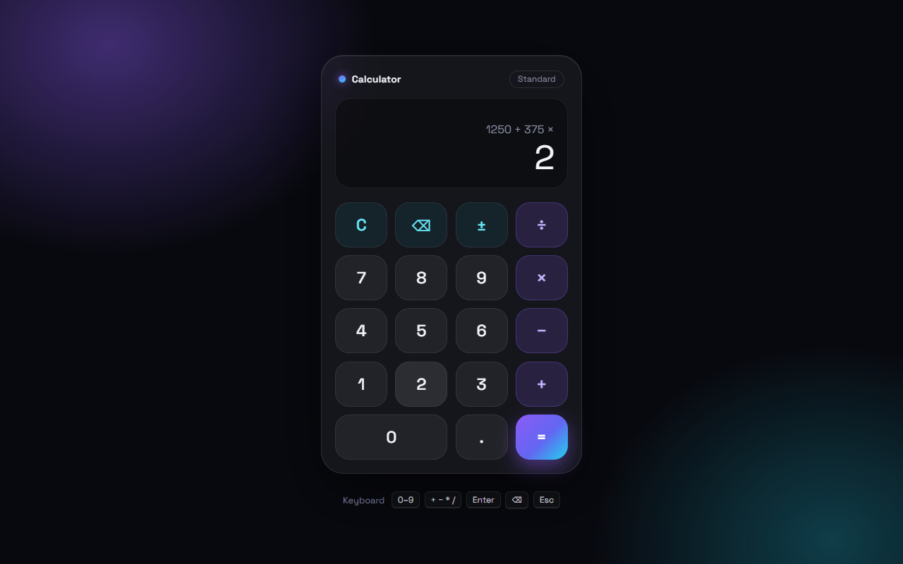

Task 1Projects
Level 2 · all four tasks
Hi, I'm Sidra Kousar. These are my four Level 2 internship projects: a calculator, a tribute page, a to-do app and a login system. Each one is hand-written with no frameworks and works on both desktop and mobile.
Level 2 · all four tasks